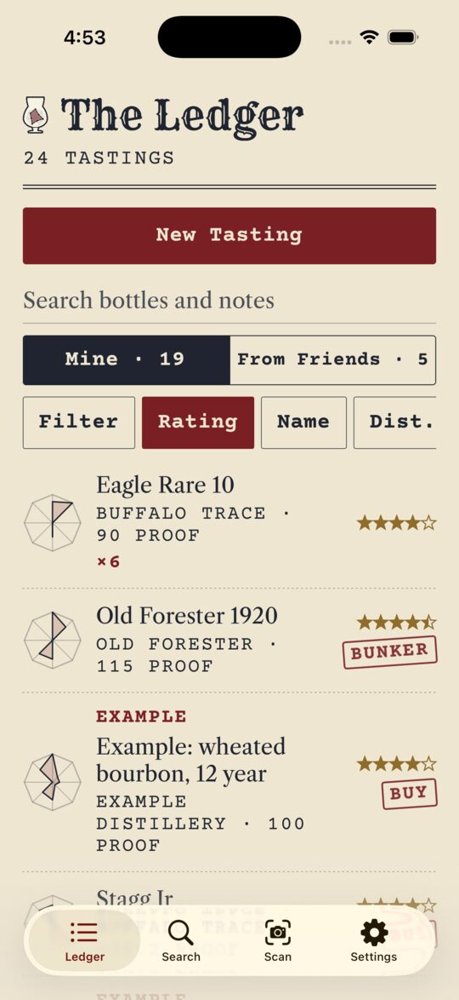
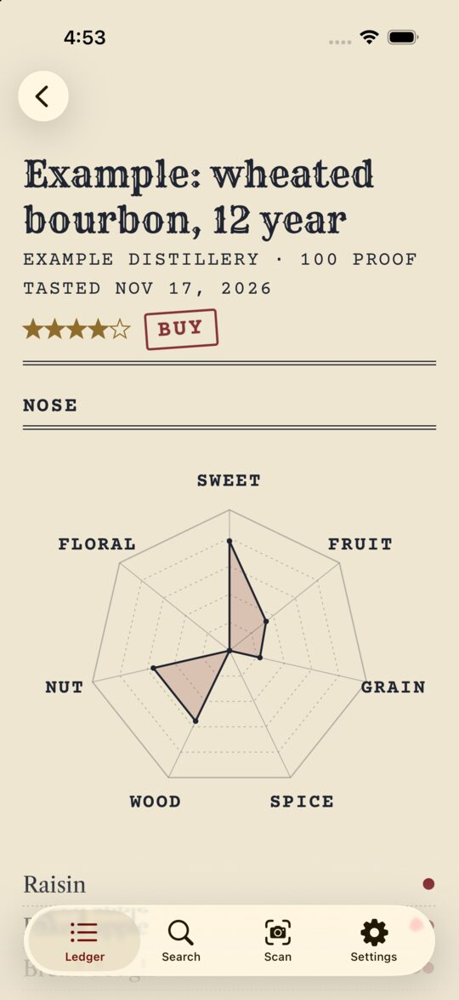
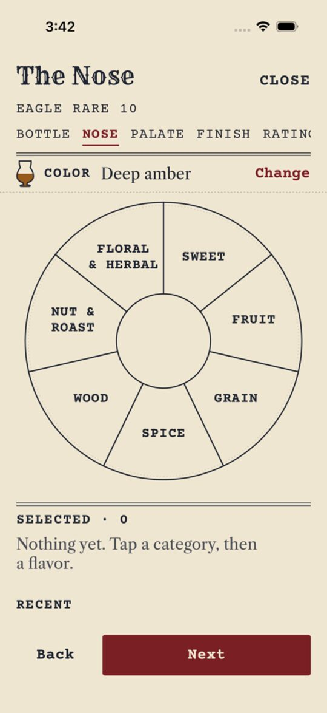
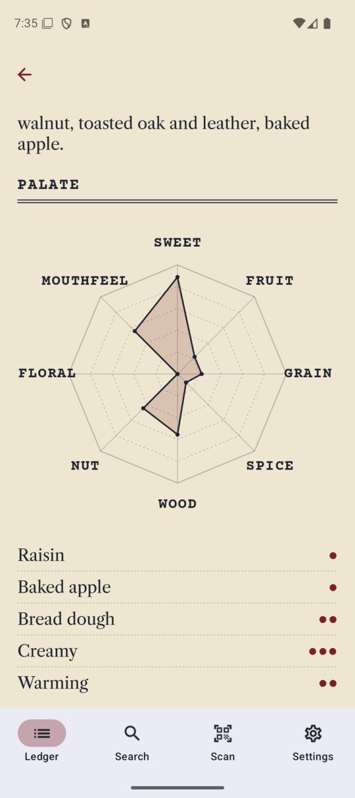
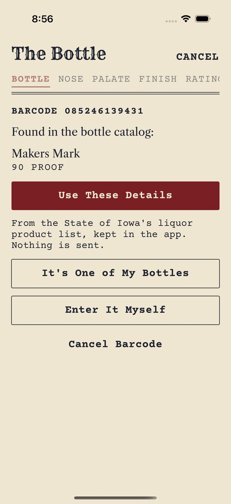
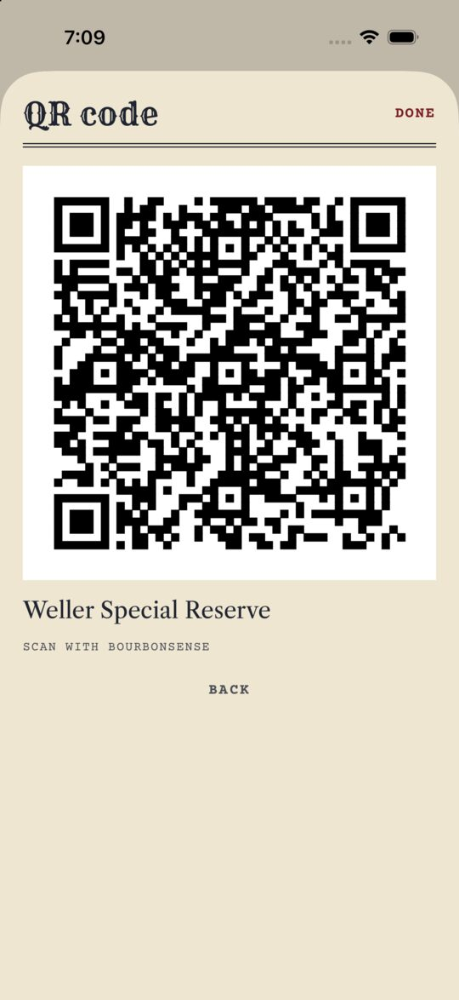
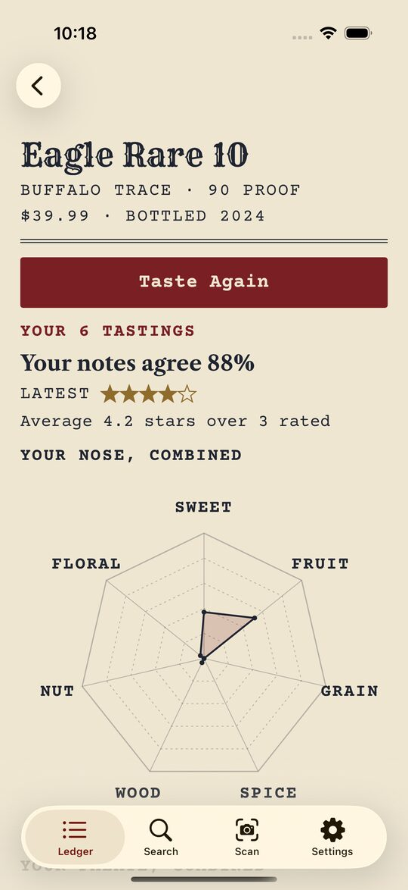
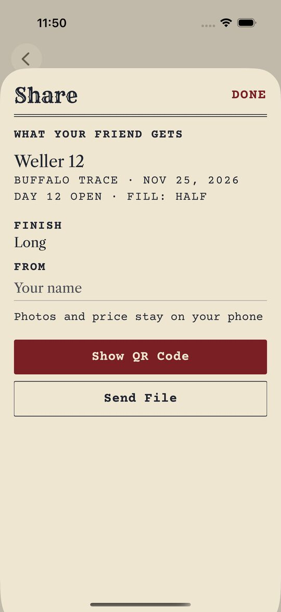

Every pour has a signature.
BourbonSense is a tasting journal for bourbon. Note what you find on the nose and the palate, and every tasting gets a signature: a picture of its flavors you can compare, search and share with friends.
Coming to the App Store and Google Play. No accounts, no server, no ads.


Taste more carefully. Remember what you liked.
See the shape of a pour
Your notes become a radar of seven flavor families, one for the nose and one for the palate. Two pours that taste alike look alike.
Find what you'll enjoy
Pick a tasting you loved and BourbonSense lists the bottles in your Ledger that taste most like it, with a percentage and what sets them apart.
Compare notes with friends
Show a QR code across the table or send a file. Your friend's note lands next to yours, ready to compare side by side.
Your journal stays yours
No account to make and no server to trust. Tastings live on your phone and leave it only when you share them.
From first sip to shared notes

A flavor wheel made for bourbon
Tap a family on the wheel, then a flavor: more than 150 of them, from caramel and cherry to leather and rye spice. Tap a flavor again for each dot of strength, from a hint to dominant.
Add the color in the glass, how long the finish lasts, a rating in half stars, a verdict (Pass, Try, Buy or Bunker) and your own notes. Add the bottle by name, or scan its barcode (below).

Two signatures for every pour
Each tasting gets a signature for the nose and another for the palate. The further a point reaches, the more that family stood out: sweet, fruit, grain, spice, wood, nut and roast, and floral and herbal, plus mouthfeel on the palate.
A pour that smells of caramel and oak can taste creamy and spicy, and the two shapes show it. Your flavors and their strength sit under each radar, with your notes.

Point at the bottle, skip the typing
Scan a bottle's barcode on the Bottle step. If you've logged it before, BourbonSense remembers it and asks whether it's the same bottle or a new batch, keeping the name and distillery so you only add the proof, batch or barrel.
A new barcode is checked against a catalog of about 2,150 bourbons, ryes and other American whiskeys built into the app, so it works with no connection. Not there either? Look it up online (only the barcode is sent), pick one of your bottles, or enter it yourself. Notes from friends carry their barcodes too, so your app learns from their scans.

Side by side, with the differences spelled out
Pick any two tastings, yours or a friend's, and see how similar they are, which flavor families differ most and which flavors only one of you found.

Bottles that taste alike
Start from a tasting, or build a profile of the flavors you're in the mood for, and see your bottles ranked by how closely they match. Each bottle shows once, at its best match.

Pass a note across the table
Show a QR code and your friend scans it with BourbonSense, or send the note as a file. You see exactly what they'll get first; the price you paid and your photos never go with it.
Notes from friends sit under From friends in your Ledger, apart from your own, and you can compare them with yours.

Watch a bottle change
Bourbon changes once it's open. Taste a bottle again, start from your last notes if you like, and BourbonSense shows what changed since last time, along with how long it's been open and how full it was.

Everything you know about a bottle
Every bottle gathers its tastings: how well your notes agree, your average rating, a combined signature and the flavors you pick most. Sort and filter your Ledger by rating, name, distillery or bottle.
No accounts. No server. No ads.
On your phone
Your tastings, bottles and photos are stored on your phone. There's nothing to sign up for.
Shared only when you share
A note leaves your phone when you show its QR code or send it, and goes straight to the friend you chose. Photos and prices are never shared.
No tracking
No analytics and no advertising. Crash reports, which help fix bugs, contain no notes, bottles or names, and you can turn them off in Settings.
Your backup
Export your whole journal to a file whenever you like, and import it on a new phone.
Looking up an unknown barcode online is optional: only the barcode goes to the lookup service, and it can be turned off in Settings.
A journal in letterpress


Light and dark themes: this page follows your device's setting, like the app.
FAQ
When can I get it?
BourbonSense is in a private beta with friends now and is coming to the App Store (iPhone, iOS 18 or later) and Google Play (Android 10 or later).
Does my friend need the app to read my note?
Yes, for now: they scan your QR code or open your file with BourbonSense. Notes you share work across iPhone and Android.
What is a signature?
A signature turns the flavors you picked, and how strong each was, into scores for seven families: sweet, fruit, grain, spice, wood, nut and roast, and floral and herbal (plus mouthfeel on the palate). Drawn as a radar, it shows a pour's shape at a glance, and it's what Compare and Find similar measure.
Do I need an internet connection?
No. Tasting, the Ledger, Compare, Find similar and sharing by QR code all work offline. Only the optional online barcode lookup uses the internet.
What if I get a new phone?
Export your journal from Settings and import the file on the new phone. Your phone's own backup also keeps it.
Is there a tour?
Yes. New users see a short tour after setting up, and anyone can replay it from Settings → Show the Tour. The guide covers the same ground in more detail.